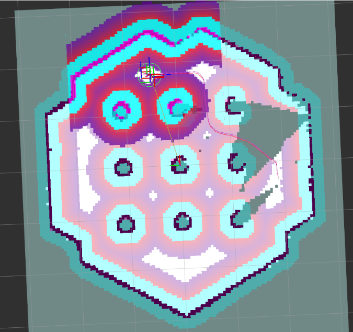

Project · ROS 2 · Visual SLAM
Mapping a maze with just a camera
A simulated robot that maps, localizes and navigates using only a depth camera, with no LiDAR.

This project implements simultaneous localization and mapping (SLAM) on a six-wheeled differential-drive robot in simulation. Instead of LiDAR, the robot builds its map from a simulated depth camera, and that map drives autonomous navigation.
System
- 3D perception pipeline A simulated Intel RealSense D455 depth camera plugin provides RGB and depth streams. RTAB-Map runs under ROS 2 to build dense 3D point clouds and an occupancy grid while localizing the robot.
- Nav2 integration The Nav2 stack consumes the generated SLAM map to plan global paths to goal poses and follow them through corridors.
- Clock synchronization Simulation time is synchronized across all ROS 2 nodes. Without this, timestamps between the camera streams and the mapping engine disagree and localization drifts.
Reading the costmap

- Obstacles. Dark/teal cells are walls and pillars, where a collision is certain.
- Inflation layer. Red rings are a clearance buffer that keeps the chassis edge off obstacles.
- Cost gradient. Fading purple adds a soft penalty that pushes the planner toward wider gaps.
- Free space. White cells have zero cost and are where the planned path runs.
Loop closure
RTAB-Map tracks visual feature points (the dense green markers on geometric structures in Figure 1) and registers them as landmarks. By matching current features against earlier frames, it detects when the robot revisits a location and adds a loop-closure constraint. This corrects accumulated odometry drift and keeps the global map consistent during long exploration runs in Gazebo.